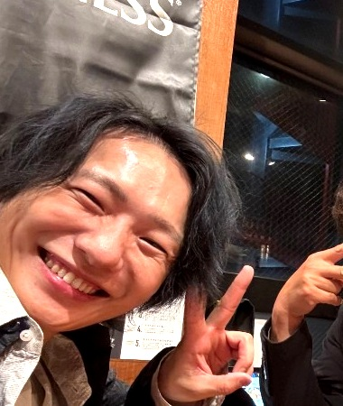

事業戦略支援 · オンライン秘書
山田 研二
数多の店舗オーナー・経営者の成功を、集客・求人・クラファン・社長の業務削減まで、全方位から支えてきた。
経営を、前に進める人。

BNI GRANO CHAPTER
事業戦略。美容のアップデート。新横浜のかき氷。
バラバラに見えた三人は、BNIで火を分け合い、同じ法人を建てた。
山田 研二 × 宇部 光太 × あらい ひとみ

BNI CHANGED US
YAMADA
集客の主戦場から、経営者のステージへ。宇部のReyelを日本一へ持っていくと決め、経営参画。その型を、TSUKIMISOUへも。
UBE
4年、サークルのノリで在籍。噛み合わない電話の先に、山田の「日本一」があった。恥ずかしくなり、ベットしてくれと口説いた。
ARAI
大繁盛でも入会。宇部プレジデント期に書記兼会計。愛情のかき氷を、〆氷という文化ごと広めろ——TSUKIMISOU FCへ。

WHY US
やらない理由を探さない。
スピード感で、決めたら動く。
目的は一つ。相手を落とさない。
リターンも辛さも、三人で背負う。
言い合う。怒って、怒られる。それでも笑い合えるのは、目的が同じだからだ。
2026年、その覚悟で法人を建てた。ＲＧ株式会社 — ルートグラーノ。

PROOF

NEXT · NOVAS CHAPTER
あらいひとみ D を中心に、新チャプター NOVAS を立ち上げ中。
元請けと下請け、顧客の奪い合い、形ばかりのチームは、排除する。
勇気のある人と、NOVASを盛り上げる。
→ 次の言葉 / 次へ F 全画面